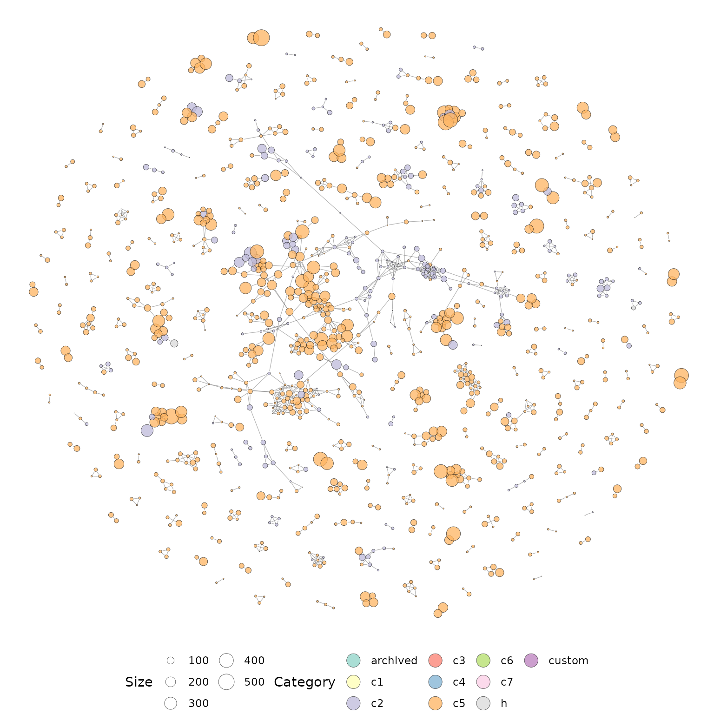
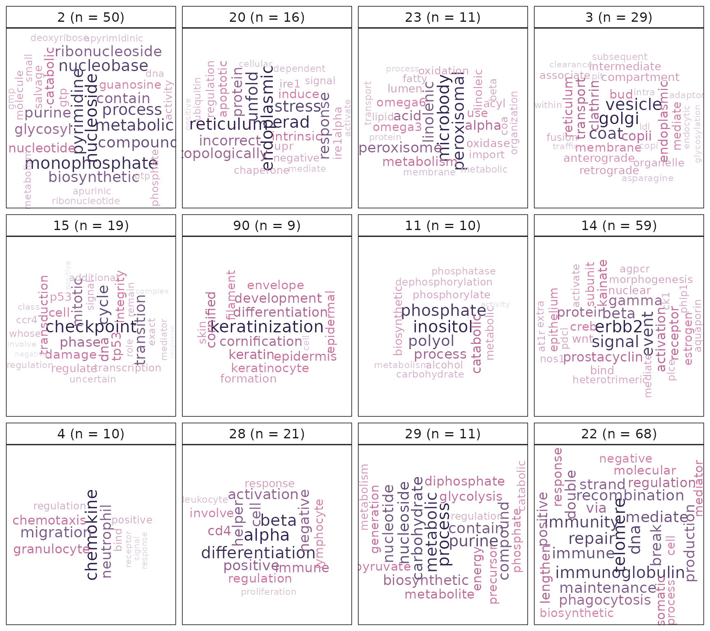
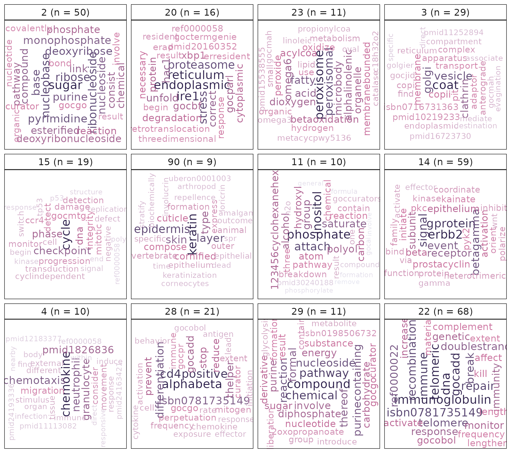
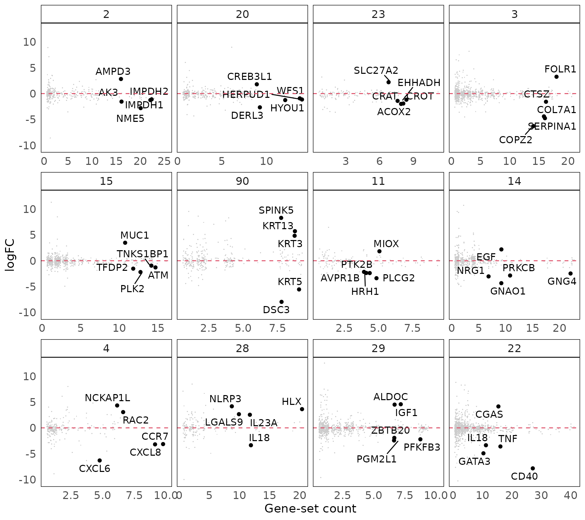

使用R包singscore，vissE和msigdb对单样本进行分子表型可视化
Dharmesh D Bhuva
Bioinformatics Division, Walter and Eliza Hall Institute of Medical Research, Parkville, VIC 3052, AustraliaDepartment of Medical Biology, University of Melbourne, Parkville, VIC 3010, Australiabhuva.d@wehi.edu.au
Chin Wee Tan
Bioinformatics Division, Walter and Eliza Hall Institute of Medical Research, Parkville, VIC 3052, AustraliaDepartment of Medical Biology, University of Melbourne, Parkville, VIC 3010, Australiacwtan@wehi.edu.au
Jinjin Chen
Bioinformatics Division, Walter and Eliza Hall Institute of Medical Research, Parkville, VIC 3052, AustraliaDepartment of Medical Biology, University of Melbourne, Parkville, VIC 3010, Australiachen.j@wehi.edu.au
Melissa J Davis
Bioinformatics Division, Walter and Eliza Hall Institute of Medical Research, Parkville, VIC 3052, AustraliaDepartment of Medical Biology, University of Melbourne, Parkville, VIC 3010, AustraliaDepartment of Biochemistry and Molecular Biology, Faculty of Medicine, Dentistry and Health Sciences, University of Melbourne, Parkville, VIC, 3010, Australiadavis.m@wehi.edu.au
Oct 2021
Source:vignettes/workflow_singscore_vissE_Chinese_ver.Rmd
workflow_singscore_vissE_Chinese_ver.RmdAbstract
摘要
R version: R version 4.1.1 (2021-08-10)
Bioconductor version: 3.14
Package version: 0.9.2
背景介绍
一套标准的生信组学数据分析流程会通过统计学分析产生一个分子列表。在转录组学背景中，这些分子往往是基因或者转录本，而鉴定它们的统计学方法通常是差异表达分析（DE分析）。一旦基因在实验中被鉴定为差异表达基因，生物学家们常常会想了解它们的生物学意义。而这是通过了解它们在所研究的生物学系统中的功能作用来实现的。许多基因的角色和功能在某种程度上是已知的，这也是一项持续进行的研究。基因功能的有关知识通常被编码在知识库中，如基因本体（GO）以及其他的通路数据库。基于这些功能注释，我们有兴趣在我们的数据中鉴定那些被富集的功能。
为此，我们使用基因集富集分析，这是一组用于鉴定基因集中被富集的功能的方法。这个分析流程会展示如何使用分子标志数据库（通过msigdb R/Bioconductor包）和基因集富集方法（singscore），对转录组数据进行功能分析。它还将展示如何使用vissE包在数据中鉴定更高阶的生物学主题。本分析流程将使用emtdata和msigdb R/Bioconductor包从ExperimentHub中加载基因表达数据以及相关基因集。单样本基因集富集方法（singscore）将被用来鉴定表征了样本功能特征的分子表型。最后，使用vissE对更高阶的功能主题进行鉴定。
生物学问题的描述
上皮-间充质转化（EMT）是一种细胞过程，描述了静态极化的上皮细胞转化为活动的间充质细胞表型的现象。它是涉及胚胎发生和组织分化的基础机制。而在癌症方面，它与癌症进展和转移有关。EMT导致上皮特征的逐渐丧失以及间充质特征的获得，使得癌症中的细胞获得了转移与侵袭的特性，诱导了细胞干性，从而避免了细胞凋亡和衰老，具备了免疫抗性。(Ksiazkiewicz, Markiewicz, and Zaczek (2012))
EMT的特征是上皮标志物（如E-钙粘蛋白和密封蛋白）的下调以及间充质标志物（如波形蛋白和N-钙粘蛋白）的上调。这些标志物的改变会导致细胞间的粘附力和细胞极性的丧失，以及迁移性和侵袭性的获得。而从富含角蛋白的粘连网络转换成富含波形蛋白的黏着斑网络则伴随着钙粘蛋白从E型转为N型(Tomita et al. 2000)。
尽管癌细胞通过EMT促进转移扩散，但它们很少完全转化为间充质表型，而是表现出一种杂交表型，被宽泛地称为上皮间充质可塑性（EMP）。EMP与乳腺癌转移风险的增加以及不良预后相关(Cursons et al. 2015)。受限于缺乏可靠的进展读数以及由此导致的对EMT的过渡与进展状态的有限研究，目前针对这种瞬态/亚稳态表型提出的特定标志物有限。这种混合态的特定标志物的鉴定将为确定转移的干预措施，以及揭示潜在治疗方法的机制提供关键信息。(Ribeiro and Paredes 2015)
在本次分析流程中，我们使用来自(Cursons et al. 2015)研究的批量转录组数据，该研究在两种乳腺癌细胞系模型中，即PMC42 system（PMC42-ET和PMC42-LA亚株）和MDA-MB-468，对EMP进行研究。在该数据集中，PMC42-LA是一种源自波形蛋白阳性，E-钙粘蛋白阴性的亲本PMC42-ET细胞的上皮亚系，两者均被归类为具有”基底B”转录组（表达间充质基因，缺乏上皮标记基因表达）。
单个样本的分子表型
为了对来自(Cursons et al. 2015)的数据进行分子表型分析，我们需要RNA-seq计数以及能表征感兴趣的分子表型的合适的基因集。在本次分析流程中我们将使用来自emtdata包的处理过的RNA-seq数据。接下来我们将使用singscore方法(Bhuva, Cursons, and Davis (2020))，分别针对来自(Tan et al. 2014)和分子标志数据库（MSigDB）(Subramanian et al. (2005))的自定义基因标志物对单个样本进行评分。
加载数据
emtdata包中包含了多种预处理过的RNA-seq数据，这些数据来自研究上皮向间充质转化的实验。该包包含了以下经过处理的数据集：
- cursons2015_se - 来自多种乳腺癌细胞系的RNA-seq数据，代表不同程度的上皮和间充质表型(Cursons et al. 2015)。
- cursons2018_se - 来自人乳腺上皮细胞（HMLE）系的RNA-seq数据，该细胞系经TGF\(\beta\)处理诱导上皮间充质转化（EMT），随后以miR-200c处理诱导间充质上皮转化（MET）(Cursons et al. 2018).
- foroutan2017_se - 一份EMT诱导实验的汇编数据，结合并消除了批次效应(Foroutan et al. 2017).
本次分析流程中使用的数据为(Cursons et al. 2015)RNA-seq数据。从SRA下载RNA-seq数据，并使用Subread aligner(Liao, Smyth, and Shi 2013)和featureCounts(Liao, Smyth, and Shi 2014)对数据进行处理生成计数矩阵。随后使用edgeR::filterByExpr()函数过滤掉低表达基因。使用edgeR R/Bioconductor包中的相关函数，根据TMM计算得到标准化因子，并计算基因的每百万读数中每千碱基映射读数（RPKM）。随后数据被存储在SummarizedExperiment对象中，可以使用emtdata R/Bioconductor包从ExperimentHub中被检索到。
来自emtdata包的数据可以使用包内的访问器或者ExperimentHub被检索到。以下的检索将搜索hub中与搜索词”emtdata”相关联的所有对象。检索到emtdata包中可用的三个数据集的信息。
library(ExperimentHub)
eh = ExperimentHub()
res = query(eh, 'emtdata')
res## ExperimentHub with 3 records
## # snapshotDate(): 2021-10-18
## # $dataprovider: Walter and Eliza Hall Institute of Medical Research, Queens...
## # $species: Homo sapiens
## # $rdataclass: GSEABase::SummarizedExperiment
## # additional mcols(): taxonomyid, genome, description,
## # coordinate_1_based, maintainer, rdatadateadded, preparerclass, tags,
## # rdatapath, sourceurl, sourcetype
## # retrieve records with, e.g., 'object[["EH5439"]]'
##
## title
## EH5439 | foroutan2017_se
## EH5440 | cursons2018_se
## EH5441 | cursons2015_se我们可以使用mcols()函数查看与每个对象关联的所有元数据。该信息将链接到每个数据的原始出版物，我们还能查看产生这些数据的物种信息。
#检索元数据
mcols(res)## DataFrame with 3 rows and 15 columns
## title dataprovider species taxonomyid
## <character> <character> <character> <integer>
## EH5439 foroutan2017_se Walter and Eliza Hal.. Homo sapiens 9606
## EH5440 cursons2018_se Queensland Universit.. Homo sapiens 9606
## EH5441 cursons2015_se Center for Cancer Bi.. Homo sapiens 9606
## genome description coordinate_1_based
## <character> <character> <integer>
## EH5439 NA Gene expression data.. 1
## EH5440 NA Gene expression data.. 1
## EH5441 NA Gene expression data.. 1
## maintainer rdatadateadded preparerclass
## <character> <character> <character>
## EH5439 Malvika D. Kharbanda.. 2021-03-30 emtdata
## EH5440 Malvika D. Kharbanda.. 2021-03-30 emtdata
## EH5441 Malvika D. Kharbanda.. 2021-03-30 emtdata
## tags rdataclass
## <list> <character>
## EH5439 Gene_Expression,Homo_sapiens_Data GSEABase::Summarized..
## EH5440 HMLE,Homo_sapiens_Data GSEABase::Summarized..
## EH5441 Homo_sapiens_Data,MDA-MB-468,PMC42-ET,... GSEABase::Summarized..
## rdatapath sourceurl sourcetype
## <character> <character> <character>
## EH5439 emtdata/foroutan2017.. https://doi.org/10.4.. TXT
## EH5440 emtdata/cursons2018_.. https://www.ncbi.nlm.. TXT
## EH5441 emtdata/cursons2015_.. https://www.ncbi.nlm.. TXT可以使用编号（“EH5441”）或者通过函数cursons2015_se()来检索对象。数据被存储为SummarizedExperiment对象，函数rowData()，colData()和assay()可用于与对象交互。我们能看见该数据测量了21个样本中约30,000个基因，基因的计数和logRPKM矩阵都被存储在对象中。
library(SummarizedExperiment)
library(emtdata)
#使用对象编号加载数据
emt_se = eh[['EH5441']]
#等效方法
emt_se = cursons2015_se()
emt_se## class: SummarizedExperiment
## dim: 29866 21
## metadata(0):
## assays(2): counts logRPKM
## rownames(29866): ENSG00000223972 ENSG00000227232 ... ENSG00000271254
## ENSG00000275405
## rowData names(7): Chr Start ... gene_name gene_biotype
## colnames(21): MDA468_Ctrl_Rep1 MDA468_Ctrl_Rep2 ... PMC42LA_EGF_Rep2
## PMC42LA_EGF_Rep3
## colData names(14): group lib.size ... Organism SRA.Study样本注释显示该数据中有3种细胞系（PMC42-ET，PMC42-LA和MDA-MB-648）。这些细胞系经过缺氧和EGF处理，并在处理3或7天后进行测量。我们还获取了每个样本关联的元数据，包括原始SRA编号以及它们的文库大小。
#查看样本注释
as.data.frame(colData(emt_se))## group lib.size norm.factors Run
## MDA468_Ctrl_Rep1 1 114794500 0.9743731 SRR3576739,SRR3576768,SRR3591405
## MDA468_Ctrl_Rep2 1 114491243 0.9931838 SRR3576740,SRR3576770,SRR3591406
## MDA468_Ctrl_Rep3 1 107923317 1.0358755 SRR3576751,SRR3576784,SRR3591417
## MDA468_EGF_Rep1 1 120949415 0.9793903 SRR3576753,SRR3576786,SRR3591419
## MDA468_EGF_Rep2 1 108830760 0.9865599 SRR3576754,SRR3576788,SRR3591420
## MDA468_EGF_Rep3 1 95608850 0.9006452 SRR3576755,SRR3576790,SRR3591421
## MDA468_HPX_Rep1 1 103636210 0.9782668 SRR3576756,SRR3576791,SRR3591422
## MDA468_HPX_Rep2 1 99763188 1.0218358 SRR3576757,SRR3576792,SRR3591423
## MDA468_HPX_Rep3 1 111820864 0.9914170 SRR3576758,SRR3576793,SRR3591424
## PMC42ET_Ctrl_Rep1 1 71276286 1.0443833 SRR3576759,SRR3576795,SRR3591425
## PMC42ET_Ctrl_Rep2 1 74625943 0.9957722 SRR3576741,SRR3576771,SRR3591407
## PMC42ET_Ctrl_Rep3 1 104167668 1.0622063 SRR3576742,SRR3576772,SRR3591408
## PMC42ET_EGF_Rep1 1 74711695 1.0303307 SRR3576743,SRR3576773,SRR3591409
## PMC42ET_EGF_Rep2 1 87532741 1.0312069 SRR3576744,SRR3576775,SRR3591410
## PMC42ET_EGF_Rep3 1 102691326 1.0485896 SRR3576745,SRR3576776,SRR3591411
## PMC42LA_Ctrl_Rep1 1 66771046 0.9511911 SRR3576746,SRR3576777,SRR3591412
## PMC42LA_Ctrl_Rep2 1 89935383 0.9872186 SRR3576747,SRR3576779,SRR3591413
## PMC42LA_Ctrl_Rep3 1 74822017 0.9930820 SRR3576748,SRR3576781,SRR3591414
## PMC42LA_EGF_Rep1 1 80151428 0.9440959 SRR3576749,SRR3576782,SRR3591415
## PMC42LA_EGF_Rep2 1 88233254 1.0227524 SRR3576750,SRR3576783,SRR3591416
## PMC42LA_EGF_Rep3 1 85941564 1.0437588 SRR3576752,SRR3576785,SRR3591418
## Sample.Name Subline Treatment BioProject
## MDA468_Ctrl_Rep1 MDA468_Ctrl_Rep1 MDA-MB-468 control PRJNA322427
## MDA468_Ctrl_Rep2 MDA468_Ctrl_Rep2 MDA-MB-468 control PRJNA322427
## MDA468_Ctrl_Rep3 MDA468_Ctrl_Rep3 MDA-MB-468 control PRJNA322427
## MDA468_EGF_Rep1 MDA468_EGF_Rep1 MDA-MB-468 EGF - 7d PRJNA322427
## MDA468_EGF_Rep2 MDA468_EGF_Rep2 MDA-MB-468 EGF - 7d PRJNA322427
## MDA468_EGF_Rep3 MDA468_EGF_Rep3 MDA-MB-468 EGF - 7d PRJNA322427
## MDA468_HPX_Rep1 MDA468_HPX_Rep1 MDA-MB-468 Hypoxia - 7d PRJNA322427
## MDA468_HPX_Rep2 MDA468_HPX_Rep2 MDA-MB-468 Hypoxia - 7d PRJNA322427
## MDA468_HPX_Rep3 MDA468_HPX_Rep3 MDA-MB-468 Hypoxia - 7d PRJNA322427
## PMC42ET_Ctrl_Rep1 PMC42ET_Ctrl_Rep1 PMC42-ET control PRJNA322427
## PMC42ET_Ctrl_Rep2 PMC42ET_Ctrl_Rep2 PMC42-ET control PRJNA322427
## PMC42ET_Ctrl_Rep3 PMC42ET_Ctrl_Rep3 PMC42-ET control PRJNA322427
## PMC42ET_EGF_Rep1 PMC42ET_EGF_Rep1 PMC42-ET EGF - 3d PRJNA322427
## PMC42ET_EGF_Rep2 PMC42ET_EGF_Rep2 PMC42-ET EGF - 3d PRJNA322427
## PMC42ET_EGF_Rep3 PMC42ET_EGF_Rep3 PMC42-ET EGF - 3d PRJNA322427
## PMC42LA_Ctrl_Rep1 PMC42LA_Ctrl_Rep1 PMC42-LA control PRJNA322427
## PMC42LA_Ctrl_Rep2 PMC42LA_Ctrl_Rep2 PMC42-LA control PRJNA322427
## PMC42LA_Ctrl_Rep3 PMC42LA_Ctrl_Rep3 PMC42-LA control PRJNA322427
## PMC42LA_EGF_Rep1 PMC42LA_EGF_Rep1 PMC42-LA EGF - 3d PRJNA322427
## PMC42LA_EGF_Rep2 PMC42LA_EGF_Rep2 PMC42-LA EGF - 3d PRJNA322427
## PMC42LA_EGF_Rep3 PMC42LA_EGF_Rep3 PMC42-LA EGF - 3d PRJNA322427
## BioSample Center.Name
## MDA468_Ctrl_Rep1 SAMN05162532 Queensland University of Technology
## MDA468_Ctrl_Rep2 SAMN05162533 Queensland University of Technology
## MDA468_Ctrl_Rep3 SAMN05162534 Queensland University of Technology
## MDA468_EGF_Rep1 SAMN05162535 Queensland University of Technology
## MDA468_EGF_Rep2 SAMN05162536 Queensland University of Technology
## MDA468_EGF_Rep3 SAMN05162537 Queensland University of Technology
## MDA468_HPX_Rep1 SAMN05162538 Queensland University of Technology
## MDA468_HPX_Rep2 SAMN05162539 Queensland University of Technology
## MDA468_HPX_Rep3 SAMN05162540 Queensland University of Technology
## PMC42ET_Ctrl_Rep1 SAMN05162541 Queensland University of Technology
## PMC42ET_Ctrl_Rep2 SAMN05162542 Queensland University of Technology
## PMC42ET_Ctrl_Rep3 SAMN05162543 Queensland University of Technology
## PMC42ET_EGF_Rep1 SAMN05162544 Queensland University of Technology
## PMC42ET_EGF_Rep2 SAMN05162545 Queensland University of Technology
## PMC42ET_EGF_Rep3 SAMN05162546 Queensland University of Technology
## PMC42LA_Ctrl_Rep1 SAMN05162547 Queensland University of Technology
## PMC42LA_Ctrl_Rep2 SAMN05162548 Queensland University of Technology
## PMC42LA_Ctrl_Rep3 SAMN05162549 Queensland University of Technology
## PMC42LA_EGF_Rep1 SAMN05162550 Queensland University of Technology
## PMC42LA_EGF_Rep2 SAMN05162551 Queensland University of Technology
## PMC42LA_EGF_Rep3 SAMN05162552 Queensland University of Technology
## Experiment Cell.Line Organism
## MDA468_Ctrl_Rep1 SRX1795037,SRX1795064,SRX1802009 MDA-MB-468 Homo sapiens
## MDA468_Ctrl_Rep2 SRX1795038,SRX1795066,SRX1802010 MDA-MB-468 Homo sapiens
## MDA468_Ctrl_Rep3 SRX1795049,SRX1795078,SRX1802021 MDA-MB-468 Homo sapiens
## MDA468_EGF_Rep1 SRX1795051,SRX1795080,SRX1802023 MDA-MB-468 Homo sapiens
## MDA468_EGF_Rep2 SRX1795052,SRX1795081,SRX1802024 MDA-MB-468 Homo sapiens
## MDA468_EGF_Rep3 SRX1795053,SRX1795082,SRX1802025 MDA-MB-468 Homo sapiens
## MDA468_HPX_Rep1 SRX1795054,SRX1795083,SRX1802026 MDA-MB-468 Homo sapiens
## MDA468_HPX_Rep2 SRX1795055,SRX1795084,SRX1802027 MDA-MB-468 Homo sapiens
## MDA468_HPX_Rep3 SRX1795056,SRX1795086,SRX1802028 MDA-MB-468 Homo sapiens
## PMC42ET_Ctrl_Rep1 SRX1795057,SRX1795087,SRX1802029 PMC42-ET Homo sapiens
## PMC42ET_Ctrl_Rep2 SRX1795039,SRX1795067,SRX1802011 PMC42-ET Homo sapiens
## PMC42ET_Ctrl_Rep3 SRX1795040,SRX1795068,SRX1802012 PMC42-ET Homo sapiens
## PMC42ET_EGF_Rep1 SRX1795041,SRX1795069,SRX1802013 PMC42-ET Homo sapiens
## PMC42ET_EGF_Rep2 SRX1795042,SRX1795070,SRX1802014 PMC42-ET Homo sapiens
## PMC42ET_EGF_Rep3 SRX1795043,SRX1795071,SRX1802015 PMC42-ET Homo sapiens
## PMC42LA_Ctrl_Rep1 SRX1795044,SRX1795072,SRX1802016 PMC42-LA Homo sapiens
## PMC42LA_Ctrl_Rep2 SRX1795045,SRX1795073,SRX1802017 PMC42-LA Homo sapiens
## PMC42LA_Ctrl_Rep3 SRX1795046,SRX1795074,SRX1802018 PMC42-LA Homo sapiens
## PMC42LA_EGF_Rep1 SRX1795047,SRX1795075,SRX1802019 PMC42-LA Homo sapiens
## PMC42LA_EGF_Rep2 SRX1795048,SRX1795076,SRX1802020 PMC42-LA Homo sapiens
## PMC42LA_EGF_Rep3 SRX1795050,SRX1795079,SRX1802022 PMC42-LA Homo sapiens
## SRA.Study
## MDA468_Ctrl_Rep1 SRP075592
## MDA468_Ctrl_Rep2 SRP075592
## MDA468_Ctrl_Rep3 SRP075592
## MDA468_EGF_Rep1 SRP075592
## MDA468_EGF_Rep2 SRP075592
## MDA468_EGF_Rep3 SRP075592
## MDA468_HPX_Rep1 SRP075592
## MDA468_HPX_Rep2 SRP075592
## MDA468_HPX_Rep3 SRP075592
## PMC42ET_Ctrl_Rep1 SRP075592
## PMC42ET_Ctrl_Rep2 SRP075592
## PMC42ET_Ctrl_Rep3 SRP075592
## PMC42ET_EGF_Rep1 SRP075592
## PMC42ET_EGF_Rep2 SRP075592
## PMC42ET_EGF_Rep3 SRP075592
## PMC42LA_Ctrl_Rep1 SRP075592
## PMC42LA_Ctrl_Rep2 SRP075592
## PMC42LA_Ctrl_Rep3 SRP075592
## PMC42LA_EGF_Rep1 SRP075592
## PMC42LA_EGF_Rep2 SRP075592
## PMC42LA_EGF_Rep3 SRP075592该数据使用的基因标识符是Ensembl基因标志符，但下游分析需要用到基因symbols和Entrez IDs。我们将把Ensembl IDs转换为基因symbols，因为这些更容易被直观地理解。emt_se的行注释包含了其他标识符的映射，如symbols。我们可以使用存储在对象中的映射将Ensembl IDs转化成symbols。但由于不同标识符间存在多重映射的问题，我们首先需要处理重复映射。我们可以通过以下方式识别重复项。
#识别重复映射
all_genes = rowData(emt_se)$gene_name
dups = unique(all_genes[duplicated(all_genes)])
dups## [1] "Y_RNA" "RGS5" "TBCE" "LINC00486" "Metazoa_SRP"
## [6] "LINC01238" "CYB561D2" "POLR2J4" "POLR2J3" "5S_rRNA"
## [11] "TMSB15B" "ALG1L9P" "DNAJC9-AS1" "BMS1P4" "SNORA70"
## [16] "HERC2P7" "U2" "U3" "ELFN2" "5_8S_rRNA"
## [21] "U1"大部分重复项是由MsicRNA引起的，因此可以通过使用其他注释，例如biotypes（比如保留蛋白编码基因）来手动移除或解决。由于重复映射基因的数量相对较小，且这些基因与我们希望研究的过程（EMT）无关，因此舍弃它们的影响将很小，可以被安全忽略。为了简单起见，我们在本次分析中直接舍弃重复映射基因。
#移除重复映射基因
emt_se = emt_se[!all_genes %in% dups, ]
rownames(emt_se) = rowData(emt_se)$gene_name
emt_se## class: SummarizedExperiment
## dim: 29752 21
## metadata(0):
## assays(2): counts logRPKM
## rownames(29752): DDX11L1 WASH7P ... AC004556.3 AC240274.1
## rowData names(7): Chr Start ... gene_name gene_biotype
## colnames(21): MDA468_Ctrl_Rep1 MDA468_Ctrl_Rep2 ... PMC42LA_EGF_Rep2
## PMC42LA_EGF_Rep3
## colData names(14): group lib.size ... Organism SRA.Study加载基因集
需要准备好表征感兴趣的分子表型的基因集用来查询单个样本。我们既可以使用msigdb包来获取分子标志数据库中的标志基因，也可以使用来自出版刊物发表的自定义标志基因。Tan et al. (2014) 开发了表征上皮和间充质表型的基因集，我们将使用这些基因集来探究样本的上皮-间充质结构。出版物中发表的数据被写入了Thiery_EMTsignatures.txt文件，该文件存储在与此分析流程相关的包中。
#读取Theiry et al.的标志基因集
thiery_path = system.file('extdata/Thiery_EMTsignatures.txt', package = 'GenesetAnalysisWorkflow')
thiery_data = read.table(thiery_path, header = TRUE)
head(thiery_data)## officialSymbol genes epiMes_tumor epiMes_cellLine Ensembl.Gene.ID
## 1 ABCC3 ABCC3 epi epi ENSG00000108846
## 2 ABHD11 ABHD11 epi <NA> ENSG00000106077
## 3 ADAP1 ADAP1 <NA> epi ENSG00000105963
## 4 ADIRF C10orf116 <NA> epi ENSG00000148671
## 5 AGR2 AGR2 epi epi ENSG00000106541
## 6 AIM1 AIM1 <NA> epi ENSG00000112297
## HGNC.symbol EntrezGene.ID
## 1 ABCC3 8714
## 2 ABHD11 83451
## 3 ADAP1 11033
## 4 ADIRF 10974
## 5 AGR2 10551
## 6 AIM1 202由于基因表达数据中使用的是基因symbols，我们将使用symbols创建基因集。我们将使用来自(Tan et al. 2014)细胞系的特异性标志基因，基因集被存储在专用的GSEABase::GeneSet对象中，可以用于存储基因集相关的元数据。Singscore既可以使用被定义为字符串向量的基因集，也可以处理GSEABase::GeneSet对象。由于后者具有更好的数据结构，我们倾向于在分析中使用后者。在后续的vissE分析中也使用到了GeneSet对象，更进一步推动了它们的使用。GeneSet对象要求基因具有唯一的标识符，因此最好为每一个基因集指定一个唯一且定义明确的集合名。此外，为了后续使用vissE包，我们将在此指定标识符类型（即SymbolIdentifier()）。
library(GSEABase)
#检索上皮基因
epi_genes = thiery_data$officialSymbol[thiery_data$epiMes_cellLine %in% 'epi']
#过滤重复基因
epi_genes = unique(epi_genes)
#创建GeneSet对象
epi_sig = GeneSet(epi_genes, setName = 'THIERY_EPITHELIAL_CELLLINE', geneIdType = SymbolIdentifier())
epi_sig## setName: THIERY_EPITHELIAL_CELLLINE
## geneIds: ABCC3, ADAP1, ..., ZNF165 (total: 170)
## geneIdType: Symbol
## collectionType: Null
## details: use 'details(object)'
#检索间充质基因
mes_genes = thiery_data$genes[thiery_data$epiMes_cellLine %in% 'mes']
#过滤重复基因
mes_genes = unique(mes_genes)
#创建GeneSet对象
mes_sig = GeneSet(mes_genes, setName = 'THIERY_MESENCHYMAL_CELLLINE', geneIdType = SymbolIdentifier())
mes_sig## setName: THIERY_MESENCHYMAL_CELLLINE
## geneIds: AKAP12, ANK2, ..., ZEB1 (total: 48)
## geneIdType: Symbol
## collectionType: Null
## details: use 'details(object)'若感兴趣的基因集在分子标志数据库（MSigDB）中可用，则可以使用msigdb包获取。该包使用ExperimentHub将MSigDB中的基因集作为GeneSet对象嵌入GSEABase::GeneSetCollection对象中，而GeneSetCollection对象可以被用于存储多个GeneSet对象。msigdb包使用symbols或Entrez IDs为人和鼠提供标志基因（使用WEHI Smyth实验室提供的版本）。该包提供了7.2及以上版本的MSigDB。
library(msigdb)
#加载MSigDB基因集
msigdb.hs = getMsigdb(org = 'hs', id = 'SYM', version = '7.2')
#添加KEGG基因集
msigdb.hs = appendKEGG(msigdb.hs)
msigdb.hs## GeneSetCollection
## names: chr11q, chr6q, ..., KEGG_VIRAL_MYOCARDITIS (31508 total)
## unique identifiers: AP001767.2, SLC22A9, ..., OR8U3 (40049 total)
## types in collection:
## geneIdType: SymbolIdentifier (1 total)
## collectionType: BroadCollection (1 total)Singscore
准备好数据和基因集后，我们现在可以使用singscore(Foroutan et al. 2018)针对给定的基因集对样本进行评分，来探究其分子表型。Singscore是一种基于秩次的单样本评分方法，由singscore R/Bioconductor包实现。评分的核心计算可以被概括为两步：计算样本内的基因排名，使用排名计算基因集得分。传入singscore的数据应经过长度偏差校正（如TPM,RPKM,RSEM）并应该过滤掉大多数样本中低表达的基因。此处使用的数据已经经过了这样的处理，因此无需进一步预处理。更多有关singscore长度偏差校正和过滤的信息可以在(Bhuva et al. 2019)中被找到。
library(singscore)
#根据基因表达对基因排序
eranks = rankGenes(assay(emt_se, 'logRPKM'))
#计算上皮得分
epi_score = simpleScore(eranks, epi_sig)
head(epi_score)## TotalScore TotalDispersion
## MDA468_Ctrl_Rep1 0.3230845 3992.642
## MDA468_Ctrl_Rep2 0.3222157 4030.448
## MDA468_Ctrl_Rep3 0.3214232 4120.145
## MDA468_EGF_Rep1 0.3230362 4076.409
## MDA468_EGF_Rep2 0.3218094 4169.812
## MDA468_EGF_Rep3 0.3274617 3951.870
#计算间充质得分
mes_score = simpleScore(eranks, mes_sig)
head(mes_score)## TotalScore TotalDispersion
## MDA468_Ctrl_Rep1 -0.027817504 10014.963
## MDA468_Ctrl_Rep2 -0.032615987 10333.722
## MDA468_Ctrl_Rep3 -0.030163516 10885.249
## MDA468_EGF_Rep1 0.014965710 10068.337
## MDA468_EGF_Rep2 0.008487366 10682.133
## MDA468_EGF_Rep3 0.018875730 8914.874不同于其他单样本方法，singscore的结果包含两种值：分数和离散度。我们发现这两种值都有助于解释基因集得分。得分表示了基因集中所有基因相对于所有测量基因的中位值表达，而离散度是衡量基因集中的基因表达协调性的指标，低离散度表示基因集中的基因有相似的表达水平。可以使用函数plotDispersion()绘制得分vs离散度的散点图，离散或连续型变量都可以被用于样本注释。singscore包中的所有绘图函数都可以通过设置isInteractive = TRUE来绘制交互图像。
plotDispersion(
epi_score,
annot = emt_se$Subline,
annot_name = 'Subline',
size = 5,
alpha = 0.5,
isInteractive = FALSE
)
从上图可以看出，MDA-MB-468细胞系更高的得分显示其相比于其他细胞系，具有更显著的上皮样特征。而这些样本中较低的离散度表明相对于其他基因，这些上皮基因有相似的表达水平。间充质基因集则显示出相反的模式，PMC42-ET和PMC42-LA细胞系相对于MDA-MB-468细胞系有更高的得分和更低的离散度。
plotDispersion(
mes_score,
annot = emt_se$Subline,
annot_name = 'Subline',
size = 5,
alpha = 0.5,
isInteractive = FALSE
)研究基因集之间的关联性通常很有用，尤其是当表型之间预期存在生物学相关性时。(Cursons et al. 2018)和(Foroutan et al. 2018)利用上皮-间充质全景图更好地理解了生物模型在上皮-间充质转化上的行为。此外，在生物学中经常将生物模型与病人数据比较，从而对发现进行更好地翻译。Singscore通过在背景数据集中绘制细胞系数据来实现这一点。下图中，我们在背景中绘制了来自TCGA的乳腺癌病人数据，随后我们将我们的细胞系数据投射到病人数据上，以探究并解释上皮间充质全景的各个方面。通过将细胞系数据投射到病人数据上，细胞系上的发现可以被传递到病人层面。我们在此使用了预先用singscore包计算得到的TCGA乳腺癌样本数据的上皮和间充质得分。
#加载预先计算好的TCGA乳腺癌EMT得分
data("scoredf_tcga_epi")
data("scoredf_tcga_mes")
#绘制EMT全景图
p_tcga = plotScoreLandscape(
scoredf1 = scoredf_tcga_epi,
scoredf2 = scoredf_tcga_mes,
scorenames = c('Epithelial score', 'Mesenchymal score')
)下图显示了PMC42-ET和PMC42-LA有相似的间充质得分，但上皮得分截然不同。另一方面，MDA-MB-468则是非常偏向上皮样的细胞系，与间充质样细胞相去甚远。我们合理怀疑PMC42-LA兼具上皮和间充质两种特性。与singscore包中的其他绘图函数一样，下图也可以通过设置isInteractive = TRUE来添加交互功能。
projectScoreLandscape(
p_tcga,
scoredf1 = epi_score,
scoredf2 = mes_score,
annot = emt_se$Subline,
annot_name = 'Subline',
isInteractive = FALSE
)
使用处理信息对样本进行注释，结果显示对MDA-MB-468进行缺氧处理会增加细胞系的间充质特性。
projectScoreLandscape(
p_tcga,
scoredf1 = epi_score,
scoredf2 = mes_score,
annot = emt_se$Treatment,
annot_name = 'Treatment',
isInteractive = FALSE
)MSigDB的hallmark集合代表了与癌症进展相关的关键分子进程。其中HALLMARK_EPITHELIAL_MESENCHYMAL_TRANSITION代表了癌症中的EMT，因此我们可以用它来计算样本的得分。我们可以用hallmark EMT得分注释样本，从而评估其与EMT景观的关系。下图显示hallmark EMT基因集可以表征上皮-间充质联合轴。
#提取hallmark EMT标志基因
hemt_sig = msigdb.hs[['HALLMARK_EPITHELIAL_MESENCHYMAL_TRANSITION']]
#使用标志基因对样本打分
hemt_score = simpleScore(eranks, hemt_sig)
#绘制hallmark EMT基因集得分
projectScoreLandscape(
p_tcga,
scoredf1 = epi_score,
scoredf2 = mes_score,
annot = hemt_score$TotalScore,
annot_name = 'Hallmark EMT score',
isInteractive = FALSE
)上图表明PMC42-ET和PMC42-LA之间的差异主要在上皮轴方向。我们可以使用函数plotRankDensity()来研究单个样本内每个基因的贡献度。归一化的基因秩分布表明上皮基因集大多数的基因相比于其他基因，在PMC42-LA中有更高的表达水平。相比之下，上皮基因在PMC42-ET中的表达更为分散。这些图的交互式版本可以被用于探究单个基因。
plotRankDensity(eranks[, 'PMC42LA_Ctrl_Rep1', drop = FALSE], epi_sig, isInteractive = FALSE)
plotRankDensity(eranks[, 'PMC42ET_Ctrl_Rep1', drop = FALSE], epi_sig, isInteractive = FALSE)
Stingscore
有时由于成本或高质量基因组材料的可用性（如FFPE样本的情况），全转录组测量并不可行。这种情况下，我们希望能使用具有靶向性的转录组，然而大多数基因集评分方法（包括singscore）要求全转录组测序，因此不能在靶向测序背景中使用。此时，singscore包中的stingscore(Bhuva, Cursons, and Davis 2020)方法可以发挥作用。Stingscore使用一组稳定表达的基因在减少的测序环境中预估基因集得分。
为了演示stingscore在靶向测序环境中的使用，我们将使用上皮基因，间充质基因和一些稳定表达的基因来模拟一个靶向测序平台。我们将使用在(Bhuva, Cursons, and Davis 2020)中鉴定的top 5稳定表达的基因来对样本打分。
#创建靶向测序基因列表
sample_genes = union(geneIds(epi_sig), geneIds(mes_sig))
sample_genes = union(sample_genes, getStableGenes(5))
#选取测序数据中存在的靶向测序基因
sample_genes = intersect(sample_genes, rownames(emt_se))
#模拟靶向测序数据
targeted_se = emt_se[sample_genes, ]
targeted_se## class: SummarizedExperiment
## dim: 214 21
## metadata(0):
## assays(2): counts logRPKM
## rownames(214): ABCC3 ADAP1 ... TARDBP HNRNPK
## rowData names(7): Chr Start ... gene_name gene_biotype
## colnames(21): MDA468_Ctrl_Rep1 MDA468_Ctrl_Rep2 ... PMC42LA_EGF_Rep2
## PMC42LA_EGF_Rep3
## colData names(14): group lib.size ... Organism SRA.Study我们从原始数据中对感兴趣的基因取样，最终得到了包含214个基因的测序数据。事实上，这种大小的测序结果可以通过NanoString’s nCounter等平台测量得到。此处使用的前5个稳定表达的基因可以被用来对样本进行评分，并对表达数据标准化以进行其他分析。Singscore和stingscore唯一的区别就在于二者计算秩的方式。在stingscore中，基因的秩是通过稳定表达基因来预估的，预估后，与singscore相似，即可使用函数simpleScore()计算最终得分。
st_genes = getStableGenes(5)
st_genes## [1] "RBM45" "BRAP" "CIAO1" "TARDBP" "HNRNPK"
#根据稳定表达基因预估基因秩
st_eranks = rankGenes(targeted_se, stableGenes = st_genes)
#使用模拟靶向数据对样本打分
epi_score_st = simpleScore(st_eranks, epi_sig)
mes_score_st = simpleScore(st_eranks, mes_sig)
#绘制singscore vs stingscore的散点图
colmap = c('MDA-MB-468' = '#1B9E77', 'PMC42-ET' = '#D95F02', 'PMC42-LA' = '#7570B3')
par(mfrow = c(1, 2))
plot(
epi_score$TotalScore,
epi_score_st$TotalScore,
col = colmap[targeted_se$Subline],
main = 'Epithelial score',
xlab = 'Singscore',
ylab = 'Stingscore (targeted)'
)
abline(coef = c(0, 1), col = 2, lty = 2)
plot(
mes_score$TotalScore,
mes_score_st$TotalScore,
col = colmap[targeted_se$Subline],
main = 'Mesenchymal score',
xlab = 'Singscore',
ylab = 'Stingscore (targeted)'
)
abline(coef = c(0, 1), col = 2, lty = 2)
上图显示singscore和stingscore计算的上皮，间充质得分均高度线性相关。然而尽管得分高度线性相关，由于存在偏移，二者的值并不完全匹配。但因为样本的相对顺序不变，生物学推断不受由stingscore计算得分引起的偏移的影响。
Multiscore
当假设未被预先确定时，我们可能希望使用多种基因集进行探索性分析。在这种情况下，我们会希望能针对100s-1000s个基因集对样本进行评分，并使用下游分析进行总结概况，此时可以使用函数multiScore()针对多个基因集同时对样本进行评分。这种实现方法比simpleScore()快得多，因此是使用多基因集评分的推荐函数。
我们将针对来自hallmark集合，GO，KEGG通路，Reactome通路以及Biocarta通路的基因集对样本进行评分。可以使用msigdb包中的函数subsetCollection()来根据MSigDB类别及子类别选取GeneSetCollection的子集。该函数将返回GeneSetCollection对象，这些对象可以作为正常列表被串联在一起，但在将最终结果传递给函数multiScore()前，需要确保列表已经被转化回GeneSetCollection对象。
#创建感兴趣的基因集集合
genesigs = c(
epi_sig,
mes_sig,
subsetCollection(msigdb.hs, 'h'),
subsetCollection(msigdb.hs, 'c2', c('CP:KEGG', 'CP:REACTOME', 'CP:BIOCARTA')),
subsetCollection(msigdb.hs, 'c5', c('GO:BP', 'GO:MF', 'GO:CC'))
)
genesigs = GeneSetCollection(genesigs)函数multiScore()的返回结果是一个包含了得分矩阵和离散度矩阵的列表。由于某些基因集可能完全由数据中未测量的基因组成，这些矩阵中有可能会存在缺失值。
eranks = rankGenes(assay(emt_se, 'logRPKM'))
msigdb_scores = multiScore(eranks, genesigs)
lapply(msigdb_scores, function(x) x[1:5, 1:2])## $Scores
## MDA468_Ctrl_Rep1 MDA468_Ctrl_Rep2
## THIERY_EPITHELIAL_CELLLINE 0.3230845 0.32221565
## THIERY_MESENCHYMAL_CELLLINE -0.0278175 -0.03261599
## HALLMARK_TNFA_SIGNALING_VIA_NFKB 0.1893111 0.18454327
## HALLMARK_HYPOXIA 0.1549132 0.15766930
## HALLMARK_CHOLESTEROL_HOMEOSTASIS 0.3035149 0.30298773
##
## $Dispersions
## MDA468_Ctrl_Rep1 MDA468_Ctrl_Rep2
## THIERY_EPITHELIAL_CELLLINE 3992.642 4030.448
## THIERY_MESENCHYMAL_CELLLINE 10014.963 10333.722
## HALLMARK_TNFA_SIGNALING_VIA_NFKB 7278.825 7191.351
## HALLMARK_HYPOXIA 7614.634 7633.907
## HALLMARK_CHOLESTEROL_HOMEOSTASIS 4222.445 4188.345
lapply(msigdb_scores, dim)## $Scores
## [1] 21043 21
##
## $Dispersions
## [1] 21043 21通过绘制所有基因集的得分vs离散度可以展示这两种值之间的一般趋势。这种趋势是预料之中的，因为只有当基因集中的基因都协调表达时才能获得强正或强负的得分。更有趣的是那些有着低离散度和评分接近0的基因集，这些基因集包含的协调表达基因相对于所有被测量基因平均表达。
smoothScatter(msigdb_scores$Scores, msigdb_scores$Dispersions, xlab = 'Score', ylab = 'Dispersion', main = 'Score vs Dispersion')
我们可以通过评估单个样本的基因集来确定它们的表型组成。由于转录组测量在相对评估时更具有生物学意义，我们计算了一个PMC42-ET对照重复和另一个PMC42-LA对照重复的得分差异。下面列出了最高的正分和负分。
#选择一个缺氧处理的样本和得分
et_la_scores = msigdb_scores$Scores[, 'PMC42ET_Ctrl_Rep1'] - msigdb_scores$Scores[, 'PMC42LA_Ctrl_Rep1']
et_la_scores = sort(et_la_scores)
head(et_la_scores)## GO_REGULATION_OF_EPINEPHRINE_SECRETION
## -0.3560168
## GO_POSITIVE_REGULATION_OF_MESODERM_FORMATION
## -0.3180387
## GO_REGULATION_OF_VERY_LOW_DENSITY_LIPOPROTEIN_PARTICLE_REMODELING
## -0.3061849
## GO_GAP_JUNCTION_CHANNEL_ACTIVITY_INVOLVED_IN_CELL_COMMUNICATION_BY_ELECTRICAL_COUPLING
## -0.3041113
## GO_INTERMEDIATE_DENSITY_LIPOPROTEIN_PARTICLE
## -0.2954161
## HP_DECREASED_SERUM_COMPLEMENT_FACTOR_I
## -0.2910616
tail(et_la_scores)## BIOCARTA_CYTOKINE_PATHWAY
## 0.2212715
## GO_POSITIVE_REGULATION_OF_T_CELL_TOLERANCE_INDUCTION
## 0.2223007
## GO_CORTICOTROPIN_RELEASING_HORMONE_RECEPTOR_BINDING
## 0.2240487
## GO_REGULATION_OF_LIPID_TRANSPORTER_ACTIVITY
## 0.2332605
## GO_11_CIS_RETINAL_BINDING
## 0.2378071
## GO_ESTROGEN_2_HYDROXYLASE_ACTIVITY
## 0.2410252识别并可视化高阶表型
在很多RNA-seq测序数据分析中，基因集富集分析（可以是一个功能性类别评分手段的过表达分析）通常会被使用并产生一系列基因集，附有相关统计量，p值或假阳性率（FDR）。在大多数传统合作中，这些结果通常由领域专家或生物学家手动校正或扫描，接着他们会提取与其特定实验或感兴趣领域相关的主题。考虑到大多数基因集富集分析会产生100s到1000s 个基因集，手动管理和解释可能非常耗时。
本分析流程中使用的方法R包，vissE，可以根据数据自动提取生物学主题，从而减少领域专家的负担。以下分析使用@cursons15 数据集的子集（确切的说是来自PMC42-ET和PMC42-LA亚系的未处理样本）来演示vissE的分析流程。我们首先进行差异表达（DE）分析以评估PMC42-LA和PMC42-ET亚系之间的差异。然后使用流行的limma::fry方法进行功能性分析，从而识别跨亚系不同的生物过程。最后，我们使用vissE鉴定、总结和可视化高阶分子表型。
差异表达分析
由于我们对了解PMC42亚系之间的差异的功能意义感兴趣，我们将仅使用(Cursons et al. 2015)中来自PMC42亚系的对照样本。在处理计数数据时，我们将使用来自(Chen, Lun, and Smyth 2016)的拟似然差异表达分析流程。我们推荐使用者参考分析流程的原始出版物，以了解在分析的每个步骤中做出的决策的细节。
library(edgeR)
library(limma)
#从原始数据中提取PMC42-ET和PMC42-LA的对照样本
emt_se_sub = emt_se[, emt_se$Subline %in% c('PMC42-ET', 'PMC42-LA') &
emt_se$Treatment == 'control']
#从SE对象中创建DGEList对象
emt_dge = asDGEList(emt_se_sub)
#创建模型设计矩阵
design = model.matrix(~ Subline, data = emt_dge$samples)
#去除低表达基因
keep = filterByExpr(emt_dge, design = design)
emt_dge = emt_dge[keep, ]
#使用TMM计算标准化因子
emt_dge = calcNormFactors(emt_dge, method = "TMM")
#估计离散度
emt_dge = estimateDisp(emt_dge, design = design, robust = TRUE)
#使用edgeR中带有拟似然检验（GLM）函数的广义线性模型进行拟合
fit = glmQLFit(emt_dge, design, robust = TRUE)
#获取差异表达（DE）基因列表
res = glmQLFTest(fit, coef = 'SublinePMC42-LA')
is.de = decideTestsDGE(res)
plotMD(fit, status = is.de, main = 'PMC42-LA vs. PMC42-ET')
#以p值0.05为阈值筛选DE基因列表
DE_list = as.data.frame(topTags(res, n = Inf, p.value = 0.05)[,-(1:6)])
head(DE_list)## gene_biotype logFC logCPM F PValue FDR
## FAT2 protein_coding -7.588511 6.614230 1334.7019 5.576353e-13 1.346410e-08
## TGFBR2 protein_coding -9.993858 3.596306 1040.0713 2.218916e-12 1.759046e-08
## SPINT1 protein_coding 6.890147 5.922593 985.9245 2.982160e-12 1.759046e-08
## PLS3 protein_coding -6.059286 5.070152 958.2729 3.489918e-12 1.759046e-08
## PLTP protein_coding -6.202561 5.935153 950.8729 3.642671e-12 1.759046e-08
## KLK11 protein_coding 8.779300 3.708962 877.8718 5.662833e-12 2.278818e-08
#获取所有基因的统计量
allg_list = as.data.frame(topTags(res, n = Inf)[,-(1:6)])
使用limma::fry测试基因集
使用limma::fry进行功能分析，以鉴定跨PMC42亚系发生改变的生物过程。用于该分析的基因集来自分子特征数据库（MSigDB）Liberzon et al. (2015)，并可通过msigdb包访问，如上一节所示。
根据我们使用vissE的一般经验，我们发现精选的基因集集合，例如hallmark集合（h）、curated通路集合（c2）和GO集合（GO），在使用时最能有助于深入了解生物学过程。此外，我们选取了感兴趣的子集的集合，然而感兴趣的集合/子集合的选择将取决于正在研究的生物学方向。例如，在研究免疫过程时可以选择免疫特征集合（c7）。
使用limma::fry进行基因集检测的一个常用方法是对每个集合分别进行分析，从而校正每个集合中的多假设检验。当生物学的理解是来自一个独立于其他集合的集合中时，这是一个有效的方法。然而，由于我们使用vissE依赖所有的集合对相关方向进行深入了解，我们合并基因集并对所有的基因集集合使用limma::fry。
#选取感兴趣的基因集/子集
genesigs = c(
epi_sig,
mes_sig,
subsetCollection(msigdb.hs, 'h', c('CP:KEGG', 'CP:REACTOME', 'CP:BIOCARTA', 'GO:BP', 'GO:MF', 'GO:CC'))
)
genesigs = GeneSetCollection(genesigs)
#使用此前生成的基因集集合（genesigs）创建fry index
fry_indices = ids2indices(geneIds(genesigs), rownames(emt_dge))
#去除极小或极大的基因集
fry_indices = fry_indices[sapply(fry_indices, length) > 10
& sapply(fry_indices, length) < 500]
#使用limma::fry进行基因集富集分析
fry_res = fry(emt_dge,
index = fry_indices,
design = design,
contrast = 'SublinePMC42-LA')
#选择显著性结果（FDR < 0.05）
fry_res = fry_res[fry_res$FDR < 0.05, ]
head(fry_res)## NGenes Direction
## GO_TRICARBOXYLIC_ACID_METABOLIC_PROCESS 13 Up
## GO_LABYRINTHINE_LAYER_MORPHOGENESIS 18 Up
## GO_DNA_UNWINDING_INVOLVED_IN_DNA_REPLICATION 16 Down
## GO_POSITIVE_REGULATION_OF_T_HELPER_CELL_DIFFERENTIATION 15 Up
## GO_DNA_POLYMERASE_COMPLEX 21 Down
## REACTOME_RA_BIOSYNTHESIS_PATHWAY 16 Up
## PValue
## GO_TRICARBOXYLIC_ACID_METABOLIC_PROCESS 7.343476e-07
## GO_LABYRINTHINE_LAYER_MORPHOGENESIS 2.604803e-06
## GO_DNA_UNWINDING_INVOLVED_IN_DNA_REPLICATION 3.526290e-06
## GO_POSITIVE_REGULATION_OF_T_HELPER_CELL_DIFFERENTIATION 3.787180e-06
## GO_DNA_POLYMERASE_COMPLEX 4.208996e-06
## REACTOME_RA_BIOSYNTHESIS_PATHWAY 4.238159e-06
## FDR
## GO_TRICARBOXYLIC_ACID_METABOLIC_PROCESS 0.004489003
## GO_LABYRINTHINE_LAYER_MORPHOGENESIS 0.004489003
## GO_DNA_UNWINDING_INVOLVED_IN_DNA_REPLICATION 0.004489003
## GO_POSITIVE_REGULATION_OF_T_HELPER_CELL_DIFFERENTIATION 0.004489003
## GO_DNA_POLYMERASE_COMPLEX 0.004489003
## REACTOME_RA_BIOSYNTHESIS_PATHWAY 0.004489003
## PValue.Mixed
## GO_TRICARBOXYLIC_ACID_METABOLIC_PROCESS 1.220636e-05
## GO_LABYRINTHINE_LAYER_MORPHOGENESIS 3.708566e-07
## GO_DNA_UNWINDING_INVOLVED_IN_DNA_REPLICATION 5.533273e-07
## GO_POSITIVE_REGULATION_OF_T_HELPER_CELL_DIFFERENTIATION 3.109981e-06
## GO_DNA_POLYMERASE_COMPLEX 6.086205e-06
## REACTOME_RA_BIOSYNTHESIS_PATHWAY 3.192814e-06
## FDR.Mixed
## GO_TRICARBOXYLIC_ACID_METABOLIC_PROCESS 1.981291e-05
## GO_LABYRINTHINE_LAYER_MORPHOGENESIS 3.173336e-06
## GO_DNA_UNWINDING_INVOLVED_IN_DNA_REPLICATION 3.608736e-06
## GO_POSITIVE_REGULATION_OF_T_HELPER_CELL_DIFFERENTIATION 7.916704e-06
## GO_DNA_POLYMERASE_COMPLEX 1.208747e-05
## REACTOME_RA_BIOSYNTHESIS_PATHWAY 8.019966e-06为vissE准备基因集测试结果
利用差异表达分析和基因集富集分析产生的可用信息，我们现在应用vissE（Visualising Set Enrichment）分析来鉴定高阶分子表型。我们注意到，类似的分析可以使用通过各种其他基因集测试方法实现，例如来自clusterProfiler包或流行的GSEA工具的过表达分析（ORA）(Subramanian et al. 2005)。
一项标准的vissE分析包括3步：
- 计算基因集重叠和基因集重叠网络。
- 基于重叠网络识别基因集聚类。
- 使用文本挖掘分析表征聚类。
- （可选）可视化每个基因集类群的基因水平统计数据。
为了进行这些分析，我们首先要准备如下的必要数据:
- 一个
GeneSetCollection对象，通过从基因集富集分析确定的重要基因集中选取子集（本例中来自limma:fry）。 - 一个命名向量，包含用于可视化的基因集统计信息。
- 一个命名向量，包含DE分析中的基因水平统计信息。
我们用于可视化目的的基因集统计数据是一个有正负的对数转换后的假阳性率(\(\pm 1\times -\log_{10}(FDR)\))，其中正代表上调基因集，负代表下调基因集。用于可视化的基因水平统计量是差异倍数的对数（logFC）。
#通过对重要基因集进行子集化来创建 GeneSetCollection
siggs = genesigs[rownames(fry_res)]
siggs## GeneSetCollection
## names: GO_TRICARBOXYLIC_ACID_METABOLIC_PROCESS, GO_LABYRINTHINE_LAYER_MORPHOGENESIS, ..., GO_PLATELET_ALPHA_GRANULE_LUMEN (1667 total)
## unique identifiers: CS, SIRT4, ..., CDY2A (13781 total)
## types in collection:
## geneIdType: SymbolIdentifier (1 total)
## collectionType: BroadCollection, NullCollection (2 total)
#准备用于可视化的基因集统计量（signed -log10(FDR)）
gsStats = -log10(fry_res$FDR)
#使用正号表示上调的基因集
gsStats = gsStats * c('Up' = 1, 'Down' = -1)[fry_res$Direction]
#必须是一个命名向量
names(gsStats) = rownames(fry_res)
head(gsStats)## GO_TRICARBOXYLIC_ACID_METABOLIC_PROCESS
## 2.34785
## GO_LABYRINTHINE_LAYER_MORPHOGENESIS
## 2.34785
## GO_DNA_UNWINDING_INVOLVED_IN_DNA_REPLICATION
## -2.34785
## GO_POSITIVE_REGULATION_OF_T_HELPER_CELL_DIFFERENTIATION
## 2.34785
## GO_DNA_POLYMERASE_COMPLEX
## -2.34785
## REACTOME_RA_BIOSYNTHESIS_PATHWAY
## 2.34785
#为可视化准备基因水平统计数量(logFC)
gStats = allg_list$logFC
#必须是一个命名向量
names(gStats) = rownames(allg_list)
head(gStats)## FAT2 TGFBR2 SPINT1 PLS3 PLTP KLK11
## -7.588511 -9.993858 6.890147 -6.059286 -6.202561 8.779300计算重叠网络
vissE包支持两种基于基因集之间基因重叠的基因集相似性度量：Jaccard指数（默认）和重叠系数。重叠系数强调了基因集之间的亲子关系，因此是分层结构数据库（例如GO或Reactome）的理想选择，但是，仅仅推荐在单个分层结构数据库而不是组合式数据库上运行vissE时才这样做。
由于我们对MSigDB的不同集合进行了基因集测试，因此使用Jaccard指数计算基因集相似性。随后，我们使用基因集相似性数据创建一个网络，并将其可视化。
library(vissE)
library(igraph)
#计算重要基因组之间的重叠
gs_ovlap = computeMsigOverlap(siggs, thresh = 0.25, measure = 'jaccard')
#利用重叠创建一个网络
gs_ovnet = computeMsigNetwork(gs_ovlap, msigGsc = siggs)
#可视化网络
set.seed(21) #设置随机数以便于获得重复结果
plotMsigNetwork(gs_ovnet)
上面的重叠网络图是基于MSigDB类别注释的，然而，通过使用基因集统计量注释节点可以包含更多信息。这里我们使用上一节准备的基因集统计量。
#绘制网络并覆盖基因集统计量
set.seed(21) #设置随机数以便于获得重复结果
plotMsigNetwork(gs_ovnet, genesetStat = gsStats)确定网络中的群
给定一个相关基因集的网络，我们预计相关基因集可能代表一个常见的高阶生物过程。因此，我们对基因集进行聚类以识别基因集类群。 用户可以选择他们喜欢的聚类方法，但是，为了使用重叠图中提供的信息，我们在此推荐使用图聚类方法。 由于我们有一个基因集网络，我们可以使用诸如来自igraphR 包的那些图聚类算法。确切地说，我们推荐使用 walktrap 算法，因为它同时适用于密集和稀疏图形，并且擅长识别大小类群(Yang, Algesheimer, and Tessone 2016)。
#使用图聚类算法识别聚类
grps = cluster_walktrap(gs_ovnet)
#提取聚类结果
grps = groups(grps)
#移除小类群
grps = grps[sapply(grps, length) > 5]
length(grps)## [1] 43由于我们可以识别大量基因集类群，我们需要提出一个优先级方案来适当地探索它们。vissE的第二步对大型聚类最适用，因为有更多信息可用于进行文本挖掘分析，因此类群大小可用作优先级方案。然而，大型基因集类群可能只是从数据库中具有良好代表性的过程中产生的。例如，许多数据库过多地描述了免疫相关过程，因为过去对这些过程进行了广泛研究，因此免疫过程可能会形成大型基因集类群。为了避免选择这样的基因集类群，我们还使用基因集统计量对基因集进行了优先级排序。因此，我们建议采用组合优先排序方法。在此分析流程中，我们优先考虑同时具有较大平均统计量(\(\mathrm{mean}(-\log_{10}(FDR))\))的大型基因集类群。(Bhuva, Cursons, and Davis 2020)使用的等级乘积方法用于在对基因集类群进行排序时，对这两个度量进行同等加权。
#计算类群大小
grp_size = sapply(grps, length)
#计算类群统计量-绝对统计量的中位数
grp_stat = sapply(grps, function(x) median(abs(gsStats[x])))
#结合排序乘积
grp_pr = rank(grp_size) * rank(grp_stat)
#使用排序乘积对组进行排序-最大化类群的大小和统计量
grps = grps[order(grp_pr, decreasing = TRUE)]显然，从获得的基因集类群的数量来看，很难一次将所有基因集类群可视化，因此，我们将重点分析前12个优先的基因集类群。
#绘制前12个类群
set.seed(21) #设置随机数以便于获得重复结果
p1 = plotMsigNetwork(gs_ovnet, markGroups = grps[1:12], genesetStat = gsStats)
p1描述基因集聚类特征
在对基因集进行聚类之后，我们想对每个类群进行生物学解释。由于来自MSigDB的基因集有合适的命名（即使是那些没有人工校正的基因集）并带有简短的描述，我们可以利用这些信息来评估每个类群的共同生物学主题。
#所有基因集都有名字
sapply(siggs[1:3], setName)## [1] "GO_TRICARBOXYLIC_ACID_METABOLIC_PROCESS"
## [2] "GO_LABYRINTHINE_LAYER_MORPHOGENESIS"
## [3] "GO_DNA_UNWINDING_INVOLVED_IN_DNA_REPLICATION"
#几乎所有的基因集都有简短的描述
sapply(siggs[1:3], description)## [1] "The chemical reactions and pathways involving dicarboxylic acids, any organic acid containing three carboxyl (COOH) groups or anions (COO-). [GOC:mah]"
## [2] "The process in which the labyrinthine layer of the placenta is generated and organized. [GOC:dph]"
## [3] "The process in which interchain hydrogen bonds between two strands of DNA are broken or 'melted', generating unpaired template strands for DNA replication. [ISBN:071673706X, ISBN:0815316194]"VissE通过对基因集名或描述进行文本挖掘分析，自动对每个聚类进行注释。在每个类群内计算通过逆文档频率（IDF）加权的词频，并使用词云进行可视化。这些词云可以用来自动注释基因集。
#计算并绘制文本挖掘的结果：使用基因集名
p2 = plotMsigWordcloud(msigGsc = siggs, groups = grps[1:12], type = 'Name')
p2
#计算并绘制文本挖掘结果：使用基因集简短描述
plotMsigWordcloud(msigGsc = siggs, groups = grps[1:12], type = 'Short')
可视化基因集聚类的基因水平统计量
在用生物学主题注释基因集聚类之后，下一步是进一步了解对这些基因集类群的显著性做出贡献的个体。在这里，我们将每个已鉴定的基因集类群的基因水平统计数据（例如，来自DE分析）联系起来。除了这些统计量之外，评估基因集类群中的基因频率也可能有用，即基因所属的类群内基因集的数量。在函数plotGeneStats()中，我们根据基因频率绘制基因水平统计量。具有高统计量和高频率的基因可以被认为是鉴定的生物学过程中的关键基因。为了减少过度绘制，对x轴使用了抖动（由于其离散性）。
#绘制基因水平统计量（logFC）
p3 = plotGeneStats(gStats,
msigGsc = siggs,
groups = grps[1:12],
statName = 'logFC')
#由于所有vissE的图都是ggplot2对象，因此可以对其进行修改
p3 = p3 + geom_hline(yintercept = 0, colour = 2, lty = 2)
p3
评估聚类中的蛋白质互作（PPI）
与基因集一样，蛋白质间相互作用（PPI）网络也可用于评估基因组合的功能作用。参与蛋白质间相互作用的相关的基因很可能也参与相关功能。为了评估这种独立的证据，vissE提供了一种模块，用来评估基因集类群中基因之间的蛋白质间相互作用。
在为每个类群生成网络之前，需要加载完整的人类PPI网络。msigdb包提供了来自国际分子交换联盟(IMEx)处理过的PPI网络。人类和小鼠的PPIs是可用的，可以使用getIMEX()函数加载。为了扩大覆盖范围，PPIs可以通过同源转换从不同的生物体中借用。这一点可以通过设置inferred=TRUE来实现。
#查找存储的IMEx版本
getIMEXVersions()## [1] "2021-07-06"## EntrezA EntrezB Taxid InteractorA InteractorB SymbolA SymbolB
## 1 1 1026 9606 P04217 P38936 A1BG CDKN1A
## 2 1 10549 9606 P04217 Q13162 A1BG PRDX4
## 3 1 2886 9606 P04217 Q14451 A1BG GRB7
## 4 1 310 9606 P04217 P20073 A1BG ANXA7
## 5 1 368 9606 P04217 O95255 A1BG ABCC6
## 6 1 6606 9606 P04217 Q16637 A1BG SMN1
## InteractionType DetectionMethod Confidence Inferred
## 1 physical association two hybrid 0.3678499 FALSE
## 2 physical association two hybrid 0.3678499 FALSE
## 3 physical association two hybrid 0.3678499 FALSE
## 4 physical association two hybrid 0.3678499 FALSE
## 5 physical association two hybrid 0.3678499 FALSE
## 6 physical association two hybrid 0.3678499 FALSE使用基因水平统计量来注释网络中的每个基因，以提供整体视图。可以使用以下过滤条件对网络进行过滤：
-
threshFrequency- 将选择在一个基因集类群中具有特定频率的节点，即该基因所属的基因集在类群中的比例。 -
threshConfidence- 将对PPI的边界进行过滤，以选择具有高置信度统计量的相互作用。 -
threshStatistic- 将选择感兴趣的统计量(例如，倍数差异对数值)大于阈值的基因。
p4 = plotMsigPPI(
ppidf = ppi,
msigGsc = siggs,
groups = grps[1:12],
geneStat = gStats,
threshFrequency = 0.25, #每个类群中基因频率阈值
threshConfidence = 0.2, #PPI边界置信度阈值
threshStatistic = 0.5, #基因水平统计量阈值
threshUseAbsolute = TRUE #对绝对值应用阈值
)
p4由vissE解读生物学意义
现在我们已经生成了三个图，我们可以将它们结合起来以提供数据的整体视图。这将提供一个由分析鉴定的生物学主题的综合视图，以及驱动这些基因集的潜在基因。
library(patchwork)
#将图组合成统一的可视化效果
p1 + p2 + p3 + p4 + plot_layout(2, 2)该分析的预期结果在包含9个基因集的类群”90”中确定。我们可以专门为类群”90”生成上面的图，同时在基因水平统计图中注释更多的基因。
#研究特定的类群
set.seed(21) #设置随机数以便于获得重复结果
#选择要绘图的类群
g = '90'
#提取感兴趣的类群
grps['90']## $`90`
## [1] "GO_KERATINIZATION"
## [2] "GO_KERATINOCYTE_DIFFERENTIATION"
## [3] "GO_EPIDERMAL_CELL_DIFFERENTIATION"
## [4] "GO_CORNIFICATION"
## [5] "REACTOME_FORMATION_OF_THE_CORNIFIED_ENVELOPE"
## [6] "REACTOME_KERATINIZATION"
## [7] "GO_KERATIN_FILAMENT"
## [8] "GO_EPIDERMIS_DEVELOPMENT"
## [9] "GO_SKIN_DEVELOPMENT"
#为指定类群计算并绘制vissE面板
p1_g = plotMsigNetwork(gs_ovnet, markGroups = grps[g], genesetStat = gsStats)
p2_g = plotMsigWordcloud(msigGsc = siggs, groups = grps[g], type = 'Short')
p3_g = plotGeneStats(
gStats,
msigGsc = siggs,
groups = grps[g],
statName = 'logFC',
topN = 25
) + geom_hline(yintercept = 0, lty = 2, colour = 2)
p4_g = plotMsigPPI(
ppidf = ppi,
msigGsc = siggs,
groups = grps[g],
geneStat = gStats,
threshFrequency = 0.25, #threshold on gene frequency per cluster
threshConfidence = 0.2, #threshold on PPI edge confidence
threshStatistic = 0.5, #threshold on gene-level statistic
threshUseAbsolute = TRUE #apply threshold to absolute values
)
p1_g + p2_g + p3_g + p4_g + plot_layout(2, 2)
使用基因集名称计算的词云暗示了一个围绕角化的主题。当使用基因集描述注释类群时，这一点进一步得到强调。这个主题的另一个证据是基因水平的统计图，它显示了角蛋白基因(KRTs)具有高logFC和频率。基因集类群中的基因集紧密聚集，表明它们之间共享许多基因。该类群主要由与PMC42-ET相比在PMC42-LA中上调的基因集组成。正如前文的背景生物学部分所讨论的，富含角蛋白的粘附连接是上皮表型的特征，这与vissE分析提供的可视化结果一致。
总结
功能性分析是生物信息学流程的重要组成部分，也是连接生物信息学与生物学的关键环节。此分析流程中提供的工具允许用户使用基因集富集分析来研究生物系统中的分子表型。这些工具和分析流程重点强调了可视化，因为这是与数据交互和从分子数据中阐释有意义的生物学过程的重要因素。
使用的包
本次分析流程依赖于Bioconductor项目的3.14中的各种包，它们在R version 4.1.1 (2021-08-10)或更高版本上运行。用于此流程的包的完整列表如下:
## R version 4.1.1 (2021-08-10)
## Platform: x86_64-pc-linux-gnu (64-bit)
## Running under: Ubuntu 20.04.3 LTS
##
## Matrix products: default
## BLAS/LAPACK: /usr/lib/x86_64-linux-gnu/openblas-pthread/libopenblasp-r0.3.8.so
##
## locale:
## [1] LC_CTYPE=en_US.UTF-8 LC_NUMERIC=C
## [3] LC_TIME=en_US.UTF-8 LC_COLLATE=en_US.UTF-8
## [5] LC_MONETARY=en_US.UTF-8 LC_MESSAGES=C
## [7] LC_PAPER=en_US.UTF-8 LC_NAME=C
## [9] LC_ADDRESS=C LC_TELEPHONE=C
## [11] LC_MEASUREMENT=en_US.UTF-8 LC_IDENTIFICATION=C
##
## attached base packages:
## [1] stats4 stats graphics grDevices utils datasets methods
## [8] base
##
## other attached packages:
## [1] igraph_1.2.7 patchwork_1.1.1
## [3] vissE_1.1.7 msigdb_1.1.5
## [5] singscore_1.14.0 emtdata_1.1.0
## [7] GSEABase_1.56.0 graph_1.72.0
## [9] annotate_1.72.0 XML_3.99-0.8
## [11] AnnotationDbi_1.56.0 edgeR_3.36.0
## [13] limma_3.50.0 ExperimentHub_2.2.0
## [15] AnnotationHub_3.2.0 BiocFileCache_2.2.0
## [17] dbplyr_2.1.1 SummarizedExperiment_1.24.0
## [19] Biobase_2.54.0 GenomicRanges_1.46.0
## [21] GenomeInfoDb_1.30.0 IRanges_2.28.0
## [23] S4Vectors_0.32.0 BiocGenerics_0.40.0
## [25] MatrixGenerics_1.6.0 matrixStats_0.61.0
## [27] ggplot2_3.3.5 GenesetAnalysisWorkflow_0.9.2
##
## loaded via a namespace (and not attached):
## [1] systemfonts_1.0.3 plyr_1.8.6
## [3] splines_4.1.1 digest_0.6.28
## [5] htmltools_0.5.2 viridis_0.6.2
## [7] fansi_0.5.0 magrittr_2.0.1
## [9] memoise_2.0.0 tm_0.7-8
## [11] Biostrings_2.62.0 graphlayouts_0.7.1
## [13] textshape_1.7.3 pkgdown_1.6.1
## [15] colorspace_2.0-2 blob_1.2.2
## [17] rappdirs_0.3.3 ggrepel_0.9.1
## [19] sylly_0.1-6 textshaping_0.3.6
## [21] xfun_0.27 dplyr_1.0.7
## [23] crayon_1.4.1 RCurl_1.98-1.5
## [25] jsonlite_1.7.2 hexbin_1.28.2
## [27] glue_1.4.2 polyclip_1.10-0
## [29] gtable_0.3.0 zlibbioc_1.40.0
## [31] XVector_0.34.0 DelayedArray_0.20.0
## [33] scico_1.2.0 scales_1.1.1
## [35] qdapRegex_0.7.2 DBI_1.1.1
## [37] Rcpp_1.0.7 viridisLite_0.4.0
## [39] xtable_1.8-4 bit_4.0.4
## [41] textclean_0.9.3 httr_1.4.2
## [43] ggwordcloud_0.5.0 RColorBrewer_1.1-2
## [45] ellipsis_0.3.2 pkgconfig_2.0.3
## [47] farver_2.1.0 sass_0.4.0
## [49] locfit_1.5-9.4 utf8_1.2.2
## [51] tidyselect_1.1.1 labeling_0.4.2
## [53] rlang_0.4.12 reshape2_1.4.4
## [55] later_1.3.0 munsell_0.5.0
## [57] BiocVersion_3.14.0 tools_4.1.1
## [59] cachem_1.0.6 generics_0.1.1
## [61] RSQLite_2.2.8 evaluate_0.14
## [63] stringr_1.4.0 fastmap_1.1.0
## [65] yaml_2.2.1 ragg_1.1.3
## [67] textstem_0.1.4 org.Hs.eg.db_3.14.0
## [69] knitr_1.36 bit64_4.0.5
## [71] fs_1.5.0 tidygraph_1.2.0
## [73] purrr_0.3.4 KEGGREST_1.34.0
## [75] ggraph_2.0.5 koRpus_0.13-8
## [77] mime_0.12 slam_0.1-48
## [79] xml2_1.3.2 compiler_4.1.1
## [81] filelock_1.0.2 curl_4.3.2
## [83] png_0.1-7 interactiveDisplayBase_1.32.0
## [85] koRpus.lang.en_0.1-4 syuzhet_1.0.6
## [87] tibble_3.1.5 statmod_1.4.36
## [89] tweenr_1.0.2 bslib_0.3.1
## [91] stringi_1.7.5 highr_0.9
## [93] desc_1.4.0 lattice_0.20-45
## [95] Matrix_1.3-4 vctrs_0.3.8
## [97] pillar_1.6.4 lifecycle_1.0.1
## [99] BiocManager_1.30.16 jquerylib_0.1.4
## [101] data.table_1.14.2 bitops_1.0-7
## [103] sylly.en_0.1-3 httpuv_1.6.3
## [105] R6_2.5.1 promises_1.2.0.1
## [107] KernSmooth_2.23-20 gridExtra_2.3
## [109] lexicon_1.2.1 MASS_7.3-54
## [111] assertthat_0.2.1 rprojroot_2.0.2
## [113] withr_2.4.2 GenomeInfoDbData_1.2.7
## [115] parallel_4.1.1 grid_4.1.1
## [117] prettydoc_0.4.1 tidyr_1.1.4
## [119] rmarkdown_2.11 ggforce_0.3.3
## [121] NLP_0.2-1 shiny_1.7.1